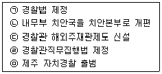
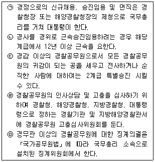
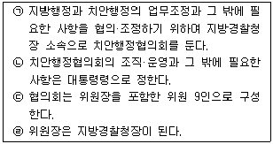
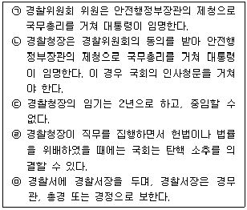
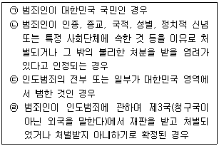
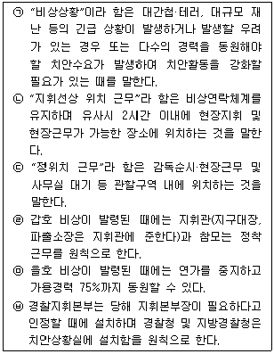
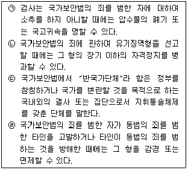
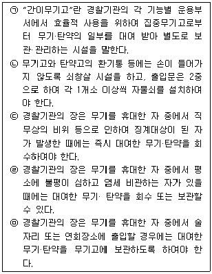

경찰공무원(순경)-경찰학개론 (2013-08-31 기출문제)
1. Joseph F. Sheley가 주장한 범죄유발의 4요소로 가장 적절하지 않은 것은?
- 범행의 동기 (Motivation)
- 이동의 용이성 (Inertia)
- 범행의 기술 (Skill)
- 범행의 기회 (Opportunity)
(정답률: 알수없음)

2. 우리나라 경찰과 관련된 연혁을 시간순서별(오래된→최근순)로 가장 적절하게 나열한 것은?

- ㉡→㉢→㉣→㉠→㉤
- ㉡→㉢→㉠→㉣→㉤
- ㉣→㉢→㉡→㉠→㉤
- ㉣→㉢→㉠→㉡→㉤
(정답률: 알수없음)
3. 「경찰공무원법」상 시보임용에 대한 설명 중 가장 적절하지 않은 것은?
- 경정 이하의 경찰공무원을 신규채용할 때에는 1년간 시보로 임용하고, 그 기간이 만료된 날에 정규 경찰공무원으로 임용한다.
- 휴직기간, 직위해제기간 및 징계에 의한 정직처분 또는 감봉처분을 받은 기간은 시보임용기간에 산입하지 아니한다.
- 경찰대학을 졸업한 사람 또는 경찰간부후보생으로서 정하여진 교육을 마친 사람을 경위로 임용하는 경우에는 시보임용을 거치지 아니한다.
- 자치경찰공무원을 그 계급에 상응하는 경찰공무원으로 임용하는 경우에는 시보임용을 거치지 아니한다.
(정답률: 64%)
4. 「경찰공무원법」에 대한 설명 중 틀린 것은 모두 몇 개인가?

- 1개
- 2개
- 3개
- 4개
(정답률: 알수없음)
5. 「경찰법」및「치안행정협의회규정」상 치안행정협의회에 대한 설명 중 옳은 것은 모두 몇 개인가?

- 1개
- 2개
- 3개
- 4개
(정답률: 25%)
6. 「경찰법」에 대한 설명 중 틀린 것은 모두 몇 개인가?

- 없음
- 1개
- 2개
- 3개
(정답률: 알수없음)
7. 「경찰관직무집행법」에 대한 설명 중 가장 적절하지 않은 것은?
- 흥행장·여관·음식점·역 기타 다수인이 출입하는 장소의 관리자 또는 이에 준하는 관계인은 그 영업 또는 공개시간 내에 경찰관이 범죄의 예방 또는 인명·신체와 재산에 대한 위해예방을 목적으로 그 장소에 출입할 것을 요구한 때에는 정당한 이유 없이 이를 거절할 수 없다.
- 경찰관은 범인의 체포·도주의 방지 또는 불법집회·시위로 인하여 자기 또는 타인의 생명·신체와 재산 및 공공시설안전에 대한 현저한 위해의 발생을 억제하기 위하여 부득이한 경우 현장책임자의 판단으로 필요한 최소한의 범위 안에서 분사기(총포·도검·화약류등단속법의 규정에 의한 분사기와 최루 등의 작용제) 또는 최루탄을 사용할 수 있다.
- 경찰서 및 지구대, 지방해양경찰관서에 법률이 정한 절차에 따라 체포·구속되거나 신체의 자유를 제한하는 판결 또는 처분을 받은 자를 수용하기 위하여 유치장을 둔다.
- 경찰관은 범죄행위가 목전에 행하여지려고 하고 있다고 인정될 때에는 이를 예방하기 위하여 관계인에게 필요한 경고를 발하고, 그 행위로 인하여 인명·신체에 위해를 미치거나 재산에 중대한 손해를 끼칠 우려가 있어 긴급을 요하는 경우에는 그 행위를 제지할 수 있다.
(정답률: 40%)
8. 「경찰관직무집행법」상 불심검문에 대한 설명 중 가장 적절하지 않은 것은?
- 경찰관은 수상한 거동 기타 주위의 사정을 합리적으로 판단하여 어떠한 죄를 범하였거나 범하려 하고 있다고 의심할 만한 상당한 이유가 있는 자 또는 이미 행하여진 범죄나 행하여지려고 하는 범죄행위에 관하여 그 사실을 안다고 인정되는 자를 정지시켜 질문할 수 있다.
- 그 장소에서 위 ①번의 질문을 하는 것이 당해인에게 불리하거나 교통의 방해가 된다고 인정되는 때에는 질문하기 위하여 부근의 경찰서·지구대·파출소 또는 출장소(지방해양경찰관서를 포함한다)에 동행할 것을 요구할 수 있다. 이 경우 당해인은 경찰관의 동행요구를 거절할 수 없다.
- 경찰관은 위 ①번에 규정된 자에 대하여 질문을 할 때에 흉기의 소지여부를 조사할 수 있다.
- 위 ①번의 경우에 당해인은 형사소송에 관한 법률에 의하지 아니하고는 신체를 구속당하지 아니하며, 그 의사에 반하여 답변을 강요당하지 아니한다.
(정답률: 60%)
9. 「범죄인 인도법」제7조에서 규정하고 있는 절대적 인도거절 사유로 볼 수 없는 것은 모두 몇 개인가?

- 1개
- 2개
- 3개
- 4개
(정답률: 알수없음)
10. 「경찰 감찰 규칙」에 대한 설명 중 가장 적절하지 않은 것은?
- 감찰관은 심야(자정부터 오전 6시까지를 말한다)에 조사를 하여서는 아니 된다. 다만, 사안에 따라 신속한 조사가 필요하고, 조사대상자로부터 심야조사 동의서를 받은 경우에는 심야에도 조사할 수 있다.
- 감찰관은 상급 경찰기관장의 지시에 따라 일정기간 동안 소속 경찰기관이 아닌 다른 경찰기관의 소속 직원의 복무실태, 업무추진 실태 등을 점검할 수 있다.
- 감찰관은 다른 경찰기관 또는 검찰, 감사원 등 다른 행정기관으로부터 통보받은 소속직원의 의무위반행위에 대해서는 통보받은 날로부터 2개월 이내에 신속히 처리하여야 한다.
- 감찰관은 소속 경찰기관의 관할구역 안에서 활동하는 것을 원칙으로 한다. 다만, 필요한 경우에는 관할구역 밖에서도 활동할 수 있다.
(정답률: 알수없음)
11. 다음 중 「경범죄처벌법」상 법정형이 가장 무거운 것은?
- 술에 취한 채로 관공서에서 몹시 거친 말과 행동으로 주정하거나 시끄럽게 한 사람
- 흥행장, 경기장, 역, 나루터, 정류장, 그 밖에 정하여진 요금을 받고 입장시키거나 승차 또는 승선시키는 곳에서 웃돈을 받고 입장권·승차권 또는 승선권을 다른 사람에게 되판 사람
- 범죄 피의자로 입건된 사람의 신원을 지문조사 외의 다른 방법으로는 확인할 수 없어 경찰공무원이나 검사가 지문을 채취하려고 할 때에 정당한 이유 없이 이를 거부한 사람
- 공회당·극장·음식점 등 여러 사람이 모이거나 다니는 곳 또는 여러 사람이 타는 기차·자동차·배 등에서 몹시 거친 말이나 행동으로 주위를 시끄럽게 하거나 술에 취하여 이유 없이 다른 사람에게 주정한 사람
(정답률: 알수없음)
12. 「경찰비상업무규칙」에 대한 설명 중 옳은 것은 모두 몇 개인가?

- 3개
- 4개
- 5개
- 6개
(정답률: 알수없음)
13. 「청원경찰법」에 대한 설명 중 가장 적절하지 않은 것은?
- 청원경찰은 청원주가 임용하되, 임용을 할 때에는 미리 경찰서장의 승인을 받아야 한다.
- 청원경찰에 대한 징계의 종류는 파면, 해임, 정직, 감봉 및 견책으로 구분한다.
- 청원경찰은 청원주와 배치된 기관·시설 또는 사업장 등의 구역을 관할하는 경찰서장의 감독을 받아 그 경비구역만의 경비를 목적으로 필요한 범위에서 「경찰관직무집행법」에 따른 경찰관의 직무를 수행한다.
- 지방경찰청장은 청원경찰의 효율적인 운영을 위하여 청원주를 지도하며 감독상 필요한 명령을 할 수 있다.
(정답률: 알수없음)
14. 「도로교통법」제2조에서 규정하고 있는 용어의 정의로 가장 적절하지 않은 것은?
- “교차로”란 '十'자로, 'T'자로나 그 밖에 둘 이상의 도로(보도와 차도가 구분되어 있는 도로에서는 차도를 말한다)가 교차하는 부분을 말한다.
- “신호기”란 도로교통에서 문자·기호 또는 등화를 사용하여 진행·정지·방향전환·주의 등의 신호를 표시하기 위하여 사람이나 전기의 힘으로 조작하는 장치를 말한다.
- “주차”란 운전자가 승객을 기다리거나 화물을 싣거나 차가 고장 나거나 그 밖의 사유로 차를 계속 정지 상태에 두는 것 또는 운전자가 차에서 떠나서 즉시 그 차를 운전할 수 없는 상태에 두는 것을 말한다.
- “보도”란 보행자만 다닐 수 있도록 안전표지나 그와 비슷한 인공구조물로 표시한 도로를 말한다.
(정답률: 알수없음)
15. 「도로교통법」상 자전거와 관련된 설명 중 가장 적절하지 않은 것은?
- 자전거의 운전자는 자전거에 어린이를 태우고 운전할 때에는 그 어린이에게 안전행정부령으로 정하는 인명보호 장구를 착용하도록 하여야 한다.
- 자전거의 운전자는 안전표지로 통행이 허용된 경우를 제외하고는 2대 이상이 나란히 차도를 통행하여서는 아니 된다.
- 자전거의 운전자는 술에 취한 상태 또는 약물의 영향과 그 밖의 사유로 정상적으로 운전하지 못할 우려가 있는 상태에서 자전거를 운전하여서는 아니 된다.
- 자전거의 운전자가 횡단보도를 이용하여 도로를 횡단할 때에는 보행자의 통행에 방해가 되지 않도록 서행하여야 한다.
(정답률: 알수없음)
16. 「집회 및 시위에 관한 법률」에 대한 설명 중 가장 적절하지 않은 것은?
- “질서유지인”이란 주최자가 자신을 보좌하여 집회 또는 시위의 질서를 유지하게 할 목적으로 임명한 자를 말한다.
- 집회 또는 시위의 주최자는 평화적인 집회 또는 시위가 방해받을 염려가 있다고 인정되면 관할 경찰관서에 그 사실을 알려 보호를 요청할 수 있다. 이 경우 관할 경찰관서의 장은 정당한 사유 없이 보호 요청을 거절하여서는 안 된다.
- 관할 경찰서장 또는 지방경찰청장은 「집회 및 시위에 관한 법률」제6조 제1항에 따른 신고서를 접수하면 신고자에게 접수 일시를 적은 접수증을 24시간 이내에 내주어야 한다.
- 경찰관은 집회 또는 시위의 주최자에게 알리고 그 집회 또는 시위의 장소에 정복을 입고 출입할 수 있다. 다만, 옥내집회 장소에 출입하는 것은 직무 집행을 위하여 긴급한 경우에만 할 수 있다.
(정답률: 46%)
17. 「국가보안법」에 대한 설명 중 옳은 것은 모두 몇 개인가?

- 1개
- 2개
- 3개
- 4개
(정답률: 알수없음)
18. 「보안업무규정」상 신원조사에 대한 설명 중 가장 적절하지 않은 것은?
- 국가보안을 위하여 국가에 대한 충성심·성실성 및 신뢰성을 조사하기 위하여 신원조사를 행한다.
- 각 조사기관의 장은 신원조사의 결과 국가안전보장상 유해로운 정보가 있음이 확인된 자에 대하여는 관계기관의 장에게 그 사실을 통보하여야 한다.
- 공공단체의 직원과 임원의 임명에 있어서 정부의 승인이나 동의를 요하는 법인의 임원 및 직원은 신원조사의 대상이 된다.
- 해외여행을 하고자 하는 자(입국하는 교포를 제외한다)는 신원조사의 대상이 된다.
(정답률: 알수없음)
19. 「경찰장비관리규칙」에 대한 설명 중 옳은 것은 모두 몇 개인가?

- 2개
- 3개
- 4개
- 5개
(정답률: 알수없음)
20. 「인권보호를 위한 경찰관 직무규칙」에 대한 설명 중 가장 적절하지 않은 것은?
- “인권침해”란 경찰관(전·의경과 무기계약직을 제외한다)이 직무수행(수사를 포함한다)과 관련하여 모든 사람에게 보장된 인권을 침해하는 것을 말한다.
- “사회적 약자”라 함은 장애인, 19세 미만의 자, 여성, 노약자, 외국인, 기타 신체적·경제적·정신적·문화적인 차별 등으로 어려움을 겪고 있어 사회적 보호가 필요한 자를 말한다.
- 인권을 존중하는 경찰활동을 정립하기 위해 경찰청장 소속으로 경찰청 인권위원회를 설치 및 운영 한다.
- 성적 소수자가 자신의 성 정체성에 대하여 공개하기를 원하지 않을 경우에는 이를 최대한 존중하여야 하며, 불가피하게 가족 등에 알려야 할 경우에도 그 사유를 충분히 설명하여야 한다.
(정답률: 알수없음)